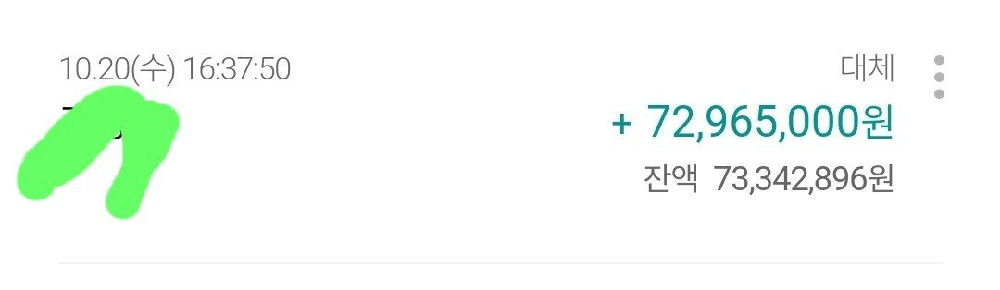

[직장인대출] 직장인 신용대출 조영우이사와의 대출후기
안녕하세요
직장인신용대출 조영우이사 와의 대출후기 작성합니다
저의 조건은 직장인 3년 재직, 4대보험 가입, 연봉 5000만원
정도 입니다
자가아파트 소유(부모님과 같이 살아 담보대출은 안되서 신
용대출로 알아봄)
필요한자금 7000만원
조영우 이사님이랑 예전에 대출진행을 해봤어서 또 다시
진행하게되었어요
상담도 잘해주시고 늦은시간에 카톡을 보내도 답장도 잘해주
시고 제가 원하는 조건에 맞게 잘 알아봐 주셨어요
그래서 승인 금액 7300만원 받았습니다

인지세 떼고 들어온거 같아요
고액건 임에도 불구하고 필요서류는 등본과 신분증만
필요하더라구요
당일상담하고 당일 입금 받아서 신속하게 처리 되었습니다
다음에 또 기회가 대면 조영우 이사님께 문의 드리고
소개할사람있음 소개도 할게요
감사합니다
https://cafe.naver.com/cityman88/289941